Aloitin ottamalla ssh-yhteyden aiemmin kurssin aikana pystyttämälleni palvelimelle.
Asensin muninin komennolla sudo apt-get -y install munin.
Tämän jälkeen asensin sysstatin: sudo apt-get -y install sysstat.
Ajoin komennon sar -u -o sarfile 60 5. Tämän komennon olisi tarkoitus kerätä 5 raportin mittaisia
kuormitustietoja 60 sekunnin välein tiedostoon sarfile.
Asensin stress:in komennolla sudo apt install stress.
Manuaalissa oli esimerkkikomento. Päätin lähteä sillä liikenteeseen:
stress --cpu 8 --io 4 --vm 2 --vm-bytes 128M --timeout 10s
Nyt kun sar kerää kuormitustietoja minuutin välein päätin kuormittaa järjestelmää
stress-komennolla hetken. Tarkoituksenani kuormittaa järjestelmää 2 minuutin ajan ajoin komennon
stress --cpu 8 --io 4 --vm 2 --vm-bytes 128M --timeout 120s. Sar:in keräämiin tietoihin ilmestyi
kuormituspiikki. Analysoidaan hieman antamaani stress-komentoa.
--cpu 8 -luo 8 prosessia
joista jokainen käy läpi tiivistä silmukkaa joka laskee satunnaisesti arvotun luvun neliöjuurta.
--io 4 -luo 4 prosessia joista jokainen pyörii silmukkaa kutsuen sync()-metodia joka
tyhjentää
muistipuskureita levylle
--vm 2 luo kaksi prosessia joista jokainen kutsuu malloc()-metodia. malloc():ia käytetään
muistin
jakamiseen.
--vm-bytes 128M jakaa kummallekin edellämainitulle prosessille 128 megatavun kokoisen
blokin.
--timeout 120s - kuormitustestin kesto.
Nämä kaikki edellämainitut aiheuttaa kuormitusta järjestelmän eri osa-alueille.
Ajoin komennon stress --cpu 8 --io 4 --vm 2 --vm-bytes 128M --timeout 60s.
Katsoin järjestelmän prosesseja toisesta ikkunasta komennolla htop.
Kuten kuvasta näkyy, testin aikana ilmestyi 14 uutta prosessia joista jokainen kuormitti järjestelmää oman osansa.
Aiheuttaakseni sar-tiedostoon piikkejä ajoin vielä saman komennon: stress --cpu 8 --io 4 --vm 2 --vm-bytes 128M --timeout 60s
Apachessa oli pyörimässä vielä vanha kurssin tehtävä. Otin tämän pois päältä komennolla
sudo a2dissite oskariwsgi.conf
Otin defaultsivun päälle komennolla sudo a2ensite 000-default.conf
Tein configtestin: sudo apache2ctl configtest ja sain tulokseksi Syntax OK
Käynnistin apachen uudestaan: sudo systemctl restart apache2
Käynnistin munin-noden uudestaan komennolla sudo systemctl restart munin-node
Kokeilin osoitetta osholopa.me/munin Sain tulokseksi 403: Permission Denied
Apachen error.log valitti hakemistosta /var/cache/munin/www/.
Muokkasin apachen default-sivun conf-tiedostoa ja lisäsin seuraavan directory-säkeistön.
<Directory /var/cache/munin/www/>
require all granted
</Directory>
Käynnistin palvelimen uudestaan komennolla sudo systemctl restart apache2. Katsoin osoitetta
osholopa.me/munin/ ja sain tulokseksi seuraavan sivun:
Graafiset esitykset sai esille valitsemalla localhost.localdomain
Tässä esimerkiksi threadien määrästä luotu graafinen kuvaus. Kuvan käyrässä näkyy pieni piikki. Tämä oli yksi testeistä.
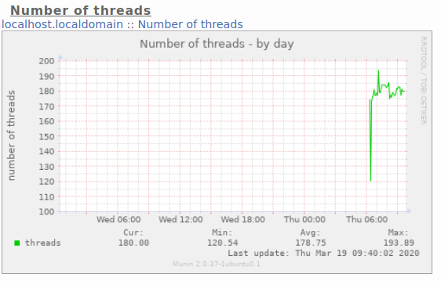Muistin käytön kaaviosta näkyy stressitestin aiheuttama piikki päivänäkymässä:
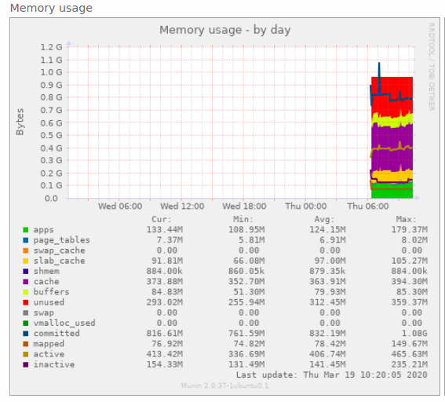Prosessorin kuormitustiedoissa näkyy stressitestin aiheuttama piikki.
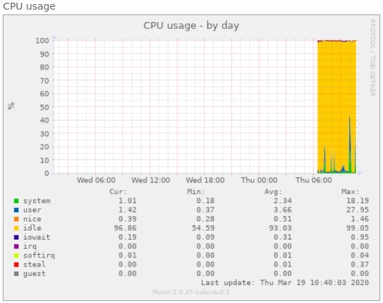En kuitenkaan mene tähän sen syvemmin, koska tiedot näkyvät vain päivän tarkkuudella tässä konfiguraatiossa.
Iotop näyttää järjestelmän levyliikenteen tietoja. Se on hyödyllinen selvittämään, mitkä prosessit käyttävät
runsasta levyliikennettä, tai heittovaihtavat muistia. Virtuaalimuistin yleistyttyä enää heittovaihtoa ei
juurikaan käytetä, muuten kuin äärimmäisissä kuormitustilanteissa.
Asensin iotopin komennolla sudo apt-get -y install iotop.
Ajoin komennon sudo iotop -oa
Toisessa tabissa ajoin:
stress --cpu 8 --io 4 --vm 2 --vm-bytes 128M --timeout 60s
iotopiin tuli näkyviin stressitestin 4 io-prosessia:
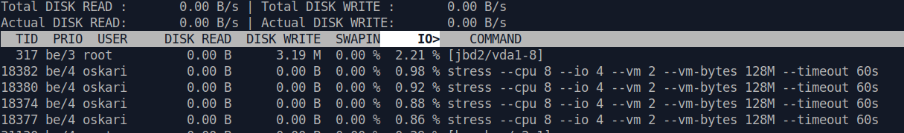Asensin dstatin komennolla sudo apt-get -y install dstat.
Käynnistin dstatin komennolla dstat.
Ajoin stressitestin komennolla:
stress --cpu 8 --io 4 --vm 2 --vm-bytes 128M --timeout 60s.
Otin kuvakaappaukset testin alussa ja lopussa.
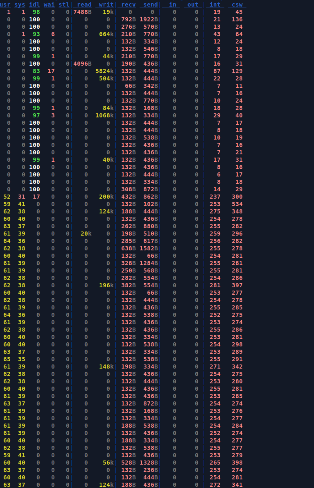Sarakkeiden usr ja sys arvot pomppaavat, nämä ovat prosessorin statistiikoita, usr on cpu:n käyttö user-moden, sys on cpun käyttö kernel-moden osalta.
LisätietoaTestin aikana kolumni idl eli idle vaihtuu sadasta nollaksi. read, write, receive, send, in ja out- kolumneissa ei tapahdu paljoakaan. Prosessien int ja csw (interrupt ja context switch) - arvot pomppaavat testin aikana myös.
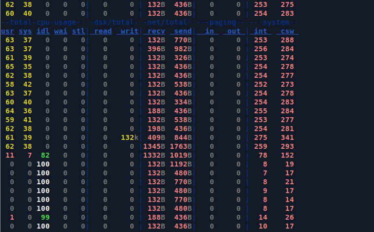Ylläolevasta kuvasta hahmottuu selkeästi, kun stressitesti loppuu.
ss --listening --tcp --numeric ss --listening --tcp
ss --tcp
ss --listening --udp ja ss --listening
--udp;Nämä komennot näyttävät tietoja palvelimen verkkoliikenteestä. --tcp- asetus näyttää TCP
-pistokkeet, ja --udp vastaavasti udp-pistokkeet. --listening-asetus näytttää vain
pistokkeet, joita kuunnellaan. Tämä asetus ei ole oletuksena
päällä.
--numeric -asetuksella ss ei hae symbolisia tietoja. Kuvasta käykin ilmi, kuinka eri komennoilla
käy
ilmi, että portista
80 kuunnellaan HTTP-pyyntöjä ja portti 22:ta kuunnellaan ssh:ta varten.
ESTAB - tila kertoo muodostetusta yhteydestä. Kuvasta näkyy että koneelta on kolme samanaikaista
ssh-yhteyttä palvelimelle.
load average näkyy kolmena numerona, joista ensimmäinen on viimeisen yhden
minuutin ajalta, toinen viimeisen
5 minuutin ja kolmas 15
minuutin ajalta.
Siitä miten luku lasketaan löytyy tarkempaa tietoa täältä. Koska
järjestelmän kuormitus vaihtelee paljon prosessien vaihtelevan elinkaaren takia, on järkevämpää tarkastella
tietyn
ajanjakson aikana ollutta keskimääräistä kuormitusta. Stressitestin
aikana näkyy komennolla top saadussa näkymässä kuinka
järjestelmän
kuormituksen aikana load average- luvut kasvavat.
Komennon nproc avulla saadun tuloksen perusteella koneessa on 1 prosessoriydin. Alla olevan kuvan
perusteella viimeisen minuutin aikana kyseisellä hetkellä prosessori on ollut 805% ylikuormittunut, jolloin 1
prosessia ajetaan ja 8 odottaa vuoroaan.
Prosessoriytimien määrä on oleellinen load-average lukuja tarkasteltessa, sillä perinteisesti yksi prosessoriydin voi suorittaa vain yhtä prosessia kerrallaan. Ydinten määrä vaikuttaa siihen, ajetaanko prosesseja vain näennäisesti rinnakkain vai moniprosessoidaanko niitä aidosti. Load average-luvut taas lasketaan absoluuttisten prosessien määrien ja kuluneen ajan perusteella, joten lukuja tulkittaessa täytyy olla tietoinen prosessoriydinten määrästä, jotta osaa arvioida millaisesta kuormituksesta on kyse.
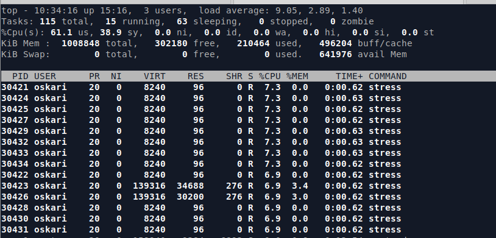Kuormituksen loppuessa luvut laskevat lähemmäs nollaa.
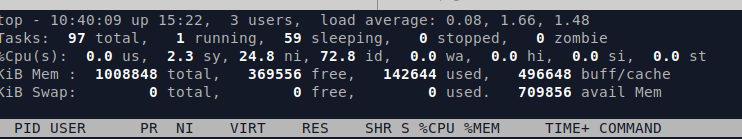Seuraavissa kuvissa tämän harjoituksen aikana tapahtuneiden kuormitusten piikkilukemia.
sar kirjaa tietoihin aikaleiman (UTC), tarkasteltujen prosessoriytimien (CPU)
määrän all, %user kentän, joka on prosessorin käyttöaste prosentteina user modessa, eli muistialueella,
jossa useimmat sovellukset toimivat. %nice -arvo taas kertoo prosessien osuuden, jotka ovat suoritettu
positiivisella nice-arvolla (-20 korkea prioriteetti, 19 matala prioriteetti). %system on
prosenttilukema prosesseista jotka ovat suoritettu kernel-tasolla. %iowait on ajan osuus,
jolloin prosessit joutui odottamaan levyliikennettä. %steal on ajan osuus jolloin prosessi joutui odottamaan näennäisprosessoria,
kun hyperviisori suoritti jotakin muuta prosessia. %idle on prosentuaalinen aika, jolloin
prosessori oli vapaana. Alla olevassa kuvassa näkyy, kuinka idle kävi nollassa, kun kuormitus oli korkeimmillaan.
toinen piikki
kolmas piikki
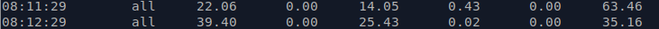useampi piikki peräkkäin
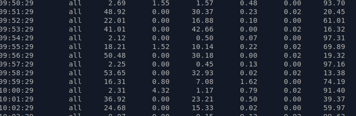Lopussa koko ajalta laskettu keskiarvo
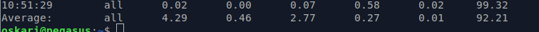